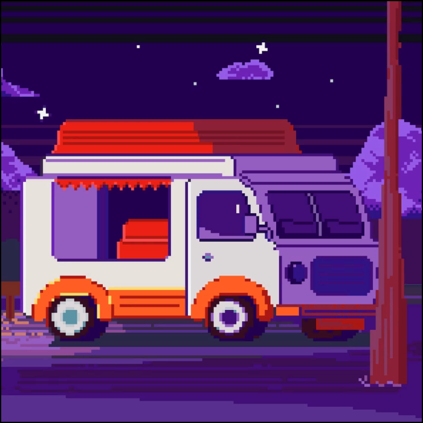

Фритрек и нулевой спринт: Подготовка к работе
</Интерес>

Это было самое начало пути. На этом этапе важно было проникнуться основами и настроиться на учёбу. И, возможно, подумать, как новые знания могут повлиять на ваше будущее.
Помню, как впервые открыла код и не поняла почти ничего, но это странно захватило.